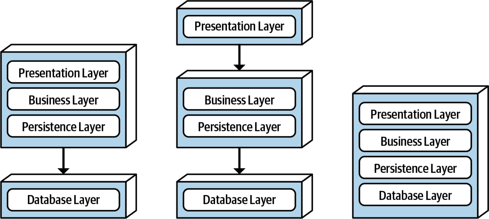

Estilo Baseado em Camadas
Estilo Baseado em Camadas
A arquitetura em camadas é um dos estilos arquiteturais mais fundamentais e amplamente utilizados na construção de sistemas. Baseia-se na ideia de dividir um sistema em camadas distintas, cada uma com um conjunto específico de responsabilidades, promovendo a modularidade e a manutenção mais fácil.
Entendendo a Arquitetura em Camadas:
Na arquitetura em camadas, o sistema é dividido em camadas horizontais, com cada camada executando funções bem definidas. A comunicação entre as camadas ocorre de maneira controlada, geralmente de uma camada para a próxima.
Exemplo 1: Aplicações Web:
As aplicações web são um dos exemplos mais comuns de arquitetura em camadas. Normalmente as aplicações web utilizam as seguintes camadas:
-
Camada de Apresentação: Esta camada é responsável pela interação com o usuário. Ela inclui a interface gráfica, o código do lado do cliente e é onde os dados são apresentados de forma amigável ao usuário.
-
Camada de Lógica de Aplicação: Esta camada contém a lógica do negócio e é responsável pelo processamento de solicitações do usuário. Ela pode validar entradas, realizar cálculos e coordenar a interação com a camada de dados.
-
Camada de Dados: Aqui, os dados são armazenados e gerenciados. Geralmente, envolve um banco de dados onde informações são armazenadas e recuperadas. A camada de dados também lida com operações de leitura e gravação.
Exemplo 2: Sistema de Gerenciamento de Banco de Dados:
Outro exemplo é um Sistema de Gerenciamento de Banco de Dados (DBMS), que geralmente segue uma arquitetura em camadas:
-
Camada de Apresentação: Nesse caso, a “apresentação” pode ser uma interface de linha de comando, uma interface gráfica ou um serviço da web que permite aos usuários interagir com o banco de dados.
-
Camada de Lógica de Negócios: Esta camada processa as solicitações do usuário, valida as consultas e executa operações no banco de dados. Ela garante que as operações sejam seguras e eficazes.
-
Camada de Gerenciamento de Dados: A camada de gerenciamento de dados é responsável por acessar o banco de dados subjacente, otimizar consultas e gerenciar o armazenamento e a recuperação dos dados.
Vantagens da Arquitetura em Camadas:
-
Modularidade: Cada camada é independente e pode ser desenvolvida, testada e mantida separadamente.
-
Facilidade de Manutenção: A separação de preocupações simplifica a manutenção, pois as mudanças em uma camada não afetam necessariamente as outras.
-
Reusabilidade: Componentes de uma camada podem ser reutilizados em outros projetos.
-
Escalabilidade: Você pode escalar camadas individualmente para atender às demandas específicas.
A Arquitetura em camadas pode ser utilizada de diversas formas
A imagem1 abaixo exemplifica três maneiras do uso da arquitetura em camadas e como as camadas se comunicam2.

Fundamentals of Software Architecture
Em resumo, a arquitetura em camadas é versátil e amplamente aplicável em diversos domínios. Seja em aplicações web, sistemas empresariais ou bancos de dados.